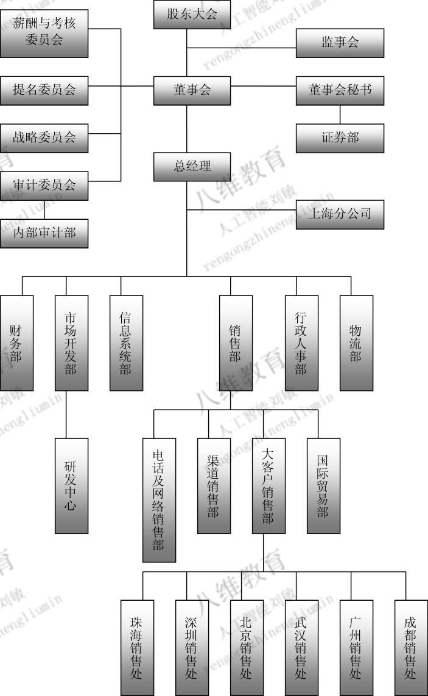
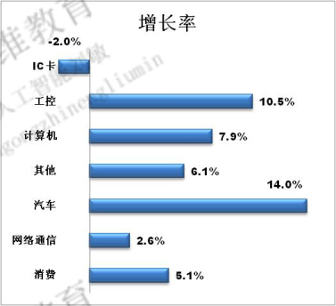
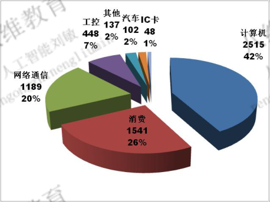

数据来源：研发/data/processed/diagrams.jsonl、charts.jsonl、evidence/*.png（T2 解析产物）；本页由 测试/在线/生成截图页.py 渲染，不手写数字。本机无 OCR 依赖：框图文本按 x 列聚类复原，图表数值来自像素级抽取 + 视觉复核，位图文字走字形模板匹配。
框图解析 · 招股说明书2 物理页 39（第 5 题证据页）
chunk_id=None｜modality_sub=None｜image_sha1=None…

图表解析 · 招股说明书2 物理页 72（第 6 题证据页）
chunk_id=None｜xref=None｜image_sha1=None…


共解析 框图 12 条 / 图表 31 条；证据图已随本页落盘：p39_diagram.png、p72_chart_x1692.png、p72_chart_x1693.png